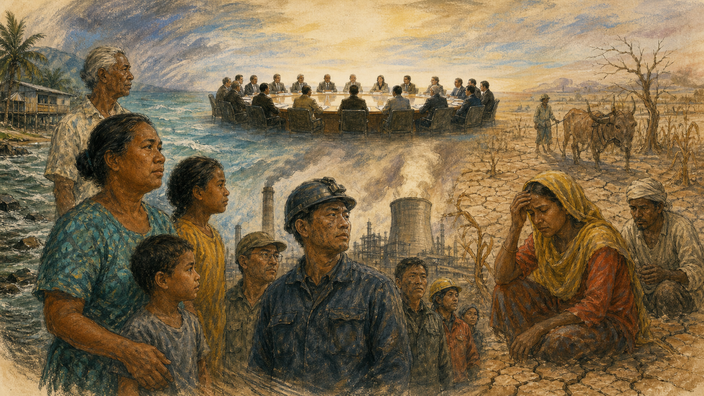

清晨五点，太平洋岛国图瓦卢首都富纳富提的天刚发白，十五岁的阿莱塔已经和父亲把沙袋搬到门前。海水从珊瑚礁的孔隙里冒出来，不一定伴随风暴，也不一定越过堤坝；到了一年中最高的潮汐，水仿佛从地下长出来，漫过菜地，舔到水箱旁边。父亲说，祖父年轻时，村里人用星星和风向判断什么时候出海，如今他们还要看另一种预报：海平面会升多快，外国承诺的钱何时会到。
在几千公里外的会议厅里，代表们讨论“减缓”“适应”“损失与损害”。这些词听上去像课本术语，却分别对应阿莱塔家的三件事：少烧煤和石油，让海水不要升得更快；修蓄水池和抬高道路，让一家人能继续生活；如果土地最终盐碱化、祖坟被海水冲走，谁承认这种无法靠一堵墙挽回的损失，又由谁出钱。气候外交的难处，正藏在这三个问题的时差里：排放发生在过去，灾害来到现在，账单却要由未来支付。

一缕煤烟，为什么两百年后还在账上
气候外交没有一个方便的“第一天”。如果一定要找起点，可以回到十八世纪末的英国。蒸汽机抽干矿井里的水，纺织厂不再只靠河流，煤炭把古老森林储存了几百万年的能量在几十年里释放出来。随后，铁路、钢铁、轮船和电力改变欧洲与北美，也改变殖民帝国获取棉花、橡胶、矿石和市场的能力。工业化创造寿命、交通和财富的巨大进步，同时把越来越多二氧化碳送入大气。
十九世纪的科学家已经逐步看见这条链。傅里叶思考大气为何保温，廷德尔实验测量气体吸收热辐射的能力，阿伦尼乌斯尝试计算二氧化碳增加会怎样改变温度。当时很少有人把它当成迫近的国际危机。烟囱意味着工作，煤烟浓度意味着城市繁荣；帝国之间争的是煤站、航线和工业产量，不是谁少排一点。
麻烦在于二氧化碳会在气候系统中留下漫长影响。某一年排放的一吨气体，并不会在跨年钟声后自动清零。因此，今天各国每年排多少，是一张“流量表”；工业革命以来累计排了多少，则是另一张“存量表”。前者能说明当下谁应迅速转型，后者能说明谁更早使用了有限的大气空间。两个表都是真的，却会导向不同的公平答案。
假如一个早已富裕的国家说：“现在所有人按同样比例减排。”一个仍有许多家庭缺电的国家可能反问：“你靠煤炭完成了城市化，为什么轮到我修学校、冰箱和铁路时，大气空间就用完了？”反过来，如果一个人口众多、今天排放很高的发展中大国只谈历史责任，小岛国也会追问：“海水等不到你先走完旧路。”气候外交从一开始就不是科学给出数字、政治照着执行，而是科学揭示风险，政治决定怎样分配速度、成本与机会。
科学把天气变成了共同问题
第二次世界大战后，测量工具、计算机和全球观测网络迅速进步。1958年，查尔斯·基林在夏威夷冒纳罗亚山持续测量大气二氧化碳，曲线一年一度随北半球植物生长而起伏，却整体向上。这条“基林曲线”让抽象推测变成不断累积的记录。卫星和海洋浮标又告诉科学家，热量不只停在空气里，大部分额外热量进入海洋，冰川、海冰和海平面也在响应。
环境问题进入外交，最初往往因为污染跨过边界。酸雨不会在护照检查站停下，放射性尘埃也不会。1972年斯德哥尔摩人类环境会议让各国第一次在联合国层面集中讨论“同一个地球”，但南北分歧已经出现：富国担心污染，许多新独立国家担心环境标准成为阻止工业化的新围墙。印度总理英迪拉·甘地在会上强调，贫穷本身也是严重的环境问题。她不是否认污染，而是在提醒：没有粮食、住房和就业的人，承担环保成本的能力完全不同。
1988年，世界气象组织和联合国环境规划署建立政府间气候变化专门委员会，也就是IPCC。它自己不替各国制定政策，而是评估已发表的科学研究。几千名科学家审阅证据，各国政府还要逐句批准“决策者摘要”。这个程序很慢，措辞经常谨慎，却因此具有特殊权威：政府可以争论该做什么，却越来越难假装不知道风险。
怎样读IPCC报告
IPCC会区分“很可能”“极有可能”等概率用语，也会标注结论的信心水平。它不是一群科学家投票猜未来，而是把观测、模型和研究质量放在一起评估。科学结论仍会更新，但“不确定”不等于“什么都不知道”；医生不能精确说出病人何时发病，也不妨碍他识别吸烟风险。
科学共同体逐渐形成的基本判断是：人类活动，尤其燃烧化石燃料和改变土地利用，已经使地球变暖；升温越多，极端高温、强降水、海平面上升和生态系统损害的风险总体越大。但科学无法替人决定一座煤矿何时关闭、一个失业矿工如何转岗、一个岛屿的文化损失值多少钱。测温仪能告诉人类水在上涨，不能替人类分账。
一份公约，先把“公平”写进去
1992年，里约热内卢地球峰会举行。冷战刚结束，人们一度相信全球合作可以解决那些任何国家都无法单独处理的问题。《联合国气候变化框架公约》在这里开放签署。它的目标是把温室气体浓度稳定在避免危险人为干扰的水平，但没有立即给每个国家一张同样的减排罚单。关键原则被写成一句绕口却影响深远的话：各国承担“共同但有区别的责任和各自能力”。
“共同”是因为大气混合，任何地方排出的二氧化碳都会影响整体；“有区别”是因为英国、美国等早期工业国已经排放很久，拥有更强财政和技术能力，而许多殖民地刚获得独立不久。公约于是把当时经合组织成员等列入附件，对它们提出更强的率先行动与资助义务。这个安排承认历史，却也冻结了一张1992年的世界照片：后来一些发展中经济体迅速成长，年度排放排名改变，旧分类与新现实之间的摩擦越来越大。
气候谈判从此形成一种特殊剧场。近两百个缔约方名义上主权平等，人口、财富和受威胁程度却差异惊人。一个代表团可能有上百名律师、能源专家和翻译，另一个小国只有两三个人，要同时赶不同会议。文本里的“应当”还是“鼓励”，“提供”还是“动员”，“资金”是赠款还是贷款，都可能决定几十亿美元和国内政治责任。
工业化国家常见立场
今天的排放结构已与1992年不同，所有主要排放者都必须加强行动；公共财政有限，私人投资与更广泛出资者也应加入。
发展中国家常见立场
富国不能用“世界变了”抹去历史排放和公约义务；若缺乏资金、技术与政策空间，要求穷国快速转型会把成本推给最少制造问题的人。
这两种立场内部都不统一。欧盟与美国的法律传统和能源结构不同；石油出口国与小岛国同属“发展中国家”，利益却近乎相反；中国、印度、巴西、南非既有大量贫困人口，也已是重要经济体。所谓“南方”与“北方”是有用的历史地图，不是一条能解释所有国家的直线。
父子暂停一下：同一只浴缸
想象兄弟两人共用一只快满的浴缸。哥哥先放了大半缸水，也因此洗完澡、穿好衣服；弟弟刚打开水龙头，父亲就说浴缸要溢出了。公平方案是两人从现在起流量相同，还是哥哥先关、帮弟弟装淋浴？如果弟弟后来把水开得很大，历史责任还能免除他的当前责任吗？试着分别站在哥哥、弟弟和楼下会被淹的邻居立场回答。
第一次硬指标，为何只约束一部分国家
框架公约像一座房子的地基，真正的墙体在1997年京都会议上搭起。《京都议定书》给一批发达经济体设定具有法律约束力的减排目标，并允许排放交易、清洁发展机制等市场工具。设计者希望：既然一吨二氧化碳无论在哪里减少，对大气作用相近，就让资金去成本较低的地方减排，同时把技术带到发展中国家。
纸面逻辑清楚，政治现实却迅速撞上来。美国参议院早已表示，不接受不给主要发展中经济体设限、又可能严重损害美国经济的协议；克林顿政府签署后没有送交批准。布什政府后来明确退出。俄罗斯批准后，议定书到2005年才生效。加拿大后来退出。与此同时，中国等国的工业和出口快速增长，全球排放重心变化。反对者说京都覆盖不足，支持者则说富国本就该先走，而且不能因别人尚未承担同等义务就拒绝自己的承诺。
京都并非毫无作用。它建立了温室气体清单、核算规则、履约程序和碳交易经验，欧盟也由此发展排放交易体系。更重要的是，它暴露了气候制度的两难：法律越硬，各国越担心国内无法通过而不愿加入；参与越广，统一硬指标越难谈成。一个只有“好学生”参加的严格条约无法稳定气候，一个所有人都参加却无人改变的宽松条约同样没有用。
2009年哥本哈根会议被寄予厚望，却以混乱收场。领导人最后拼出的《哥本哈根协议》没有按原计划成为全面法律条约，但它写下控制升温、提交自主行动和富国融资的方向。会议外，寒风中的示威者高喊气候正义；会议内，小国抱怨文本由少数大国闭门起草。失败没有终止谈判，反而迫使外交官换一条路：不再先从上而下切一块全球蛋糕，而让每个国家先端出自己的盘子。
每个国家自己交作业，世界共同检查
2015年12月12日，巴黎近郊勒布尔歇会场。法国外交部长法比尤斯举起绿色小槌，问有没有反对意见，随即落槌。代表们起立鼓掌，有人拥抱，有人落泪。《巴黎协定》诞生。它没有给所有国家规定同一比例，而要求每个缔约方提交“国家自主贡献”，说明自己准备怎样减排与适应，并每五年更新，原则上一次比一次更有雄心。
巴黎的精巧之处，是把不同责任放进同一框架，同时允许内容不同。所有国家都要行动和报告，发达国家继续带头并提供支持，其他国家根据能力逐步加强。协定目标是把全球平均升温控制在较工业化前“远低于2摄氏度”，并努力限制在1.5摄氏度。对小岛国而言，1.5不是漂亮口号，而是家园存续概率的差别。
这是一种“棘轮机制”：每五年盘点全球进展，再推动国家计划加码。它没有一个世界政府来罚不及格者，力量来自公开比较、国内法律、技术价格下降、投资预期和社会监督。批评者认为，自主承诺加总仍不够，规则可能产生雄心幻觉；支持者则指出，若坚持一次谈成一套硬性配额，巴黎很可能根本不会有近乎普遍参与。
协定、承诺与政策不是一回事
国家“加入巴黎协定”是国际法层面的身份；提交NDC是国际程序；真正关闭高排放设施、建设电网、改变汽车标准则要靠国内法律和预算。媒体报道“某国承诺净零”时，应继续追问：目标年份是什么？覆盖哪些气体？是否包含国际碳信用和森林吸收？中期政策是否与长期口号一致？
巴黎还显示国内政治怎样反复进入国际谈判。美国在奥巴马政府时期加入，特朗普第一任期宣布退出，拜登政府重新加入，后来美国政策又发生变化。任何大国摇摆都会影响信任，却没有让整个制度自动消失，因为欧盟、中国、印度、小岛国、企业、城市与法院都在各自轨道上行动。气候外交不是一列只有一个司机的火车，更像许多速度不同、会争抢轨道的车队。
一千亿美元，为什么既巨大又不够
回到阿莱塔父亲等待的钱。2009年，发达国家承诺到2020年每年共同动员一千亿美元气候资金支持发展中国家，后来延长到2025年。这个数字不是根据所有需求精确计算出来的全球账单，而是谈判妥协。它在政治上有象征意义：富国承认转型和适应不能只靠穷国自己付。但目标迟到才实现，信任已经受损。
为什么一千亿美元听来很多，受援国仍说不够？首先，全球能源、交通、住房和农业转型需要的资金以万亿美元计。其次，钱的性质比总额更重要。一个有稳定电费收入的太阳能电站可能吸引贷款；一座贫困沿海村庄的防洪堤不产生现金流，更需要赠款。若一个刚遭飓风、债务已经很高的岛国只能再借钱“适应”，它会觉得自己为别人排放造成的风险付两次钱。
适应资金尤其难。减少一吨二氧化碳可以比较，修湿地、改良耐旱种子、建立高温预警的收益分散在未来，也不容易被投资者收费。国际资金还要经过项目申请、环境评估、采购和审计。捐助方担心腐败和无效项目，要求严格程序；小国则说自己没有几十名顾问填写表格，越脆弱越拿不到钱。双方关切都合理，制度却可能把合理叠成瘫痪。
2024年巴库COP29通过新的集体量化资金目标：到2035年，由发达国家带头，把面向发展中国家的气候资金提高到每年至少三千亿美元，并呼吁各方把所有公共和私人来源的资金规模扩大到每年1.3万亿美元。许多发展中国家和社会团体认为三千亿远低于需求，而且对赠款、债务和出资责任仍不够清楚；支持者强调，在艰难财政环境中，扩大三倍仍是可以建立后续行动的底线。数字达成一致，并不等于钱已经到账。
父子暂停一下：贷款算不算帮助
一座沿海城市需要十亿元修防潮设施。甲国赠送两亿元，乙国提供五亿元低息贷款，银行因政府担保再投三亿元。新闻标题可以写“十亿元气候资金到位”。但谁最终还本付息？谁承担项目失败风险？如果设施保护了港口企业和贫困社区，收费应怎样分配？请给“钱到了”设计至少三个检查问题。
有些东西不能靠适应保住
很长时间里，富国愿意谈减排与适应，却对“损失与损害”格外谨慎。原因并不神秘：这个词可能通向责任与赔偿。小岛国早在1991年就提出与海平面上升相关的保险机制。它们说，若升温超过适应极限，土地永久消失、淡水层被盐侵、文化遗址迁走，这不是再修高一点堤坝就能解决的。
2013年华沙国际机制成立，2015年巴黎协定单列相关条款，但巴黎决定同时注明，这一条不构成或提供任何责任与赔偿基础。这正是外交文本的双面：脆弱国家争到正式承认，发达国家则筑起法律防火墙。到2022年沙姆沙伊赫COP27，各国终于同意建立损失与损害基金；2023年迪拜会议推动基金启动。谁有资格获得、谁应出资、由谁管理、怎样快速到账，继续成为争论。
这里必须区分科学归因与法律归责。科学家可以评估某类极端天气因人为变暖变得多大概率、更强多少；要把一次灾害的每一美元损失分配给具体国家，则涉及历史排放、企业责任、当地规划、自然波动等复杂因素。困难不代表受害者没有损失，也不表示任何排放者都可免谈责任。它说明气候正义既需要数据，也需要政治和伦理判断。
脆弱国家的记忆
我们制造的排放很少，却最先失去土地和生命。把援助说成慈善，会遮住造成风险的历史关系；资金应当可预测、容易获取，并以赠款为主。
传统捐助国的顾虑
无限追溯的赔偿责任在法律和财政上不可控；今天的大排放者和有能力国家也应贡献。制度必须能核查用途，不能只按旧名单分担。
不要把任一方 caricature 成贪婪者。纳税人会问本国医院和养老预算怎么办，受灾者会问为什么要为没有享受过的工业化承担代价。真正的外交工作，是把道德要求转化为可持续的缴款、保险、预警、债务安排和灾后拨款，而不是靠一次掌声解决。
离开化石燃料，不等于关掉一只开关
2023年迪拜COP28的全球盘点文本首次在联合国气候大会核心决定中呼吁能源系统“转型离开化石燃料”，同时提出到2030年全球可再生能源装机容量增至三倍、能源效率改善速度加倍。措辞不是“立即淘汰”，也没有给每个国家相同时间表。对一些行动者来说，这是三十年谈判终于说出问题根源；对另一些国家来说，模糊动词让继续扩产仍有空间。
能源不是普通商品。它决定工厂能否开工、孩子能否夜读、医院能否冷藏疫苗。波兰矿区、美国油气州、中国煤城、尼日利亚缺电社区和沙特财政面对的转型不是同一道题。关闭一座矿井可以减少排放，也可能让整座城失去税收。所谓“公正转型”，就是不把矿工、低收入家庭和资源依赖地区当作宏观模型里可以悄悄删掉的数字。
技术竞争又为外交增加新层次。太阳能板、电池、电动车和绿色氢能既是减排工具，也是产业与国家安全问题。政府补贴本国产业，可能加速规模化和降价，也可能引发贸易壁垒；关键矿产开采能支持清洁能源，却可能伤害矿区水源和原住民权利。富国要求供应链“绿色”，发展中国家会追问：你是帮助我们升级，还是用碳标准保护自己的市场？
森林与土地也进入交易。保护热带雨林能储碳、保水和维护生物多样性，但森林不是无人空间。若政府或企业为了碳信用赶走世代居住的社区，“绿色项目”也会制造不公。反过来，完全没有外部资金，地方居民可能只能靠伐木或种植单一作物谋生。好的制度需要明确土地权、让社区参与并分享收益，也要诚实面对森林吸收不能永久替代停止化石排放。
谈判没有大结局，只有下一轮执行
2025年，联合国气候大会来到巴西亚马孙河口城市贝伦。巴黎协定十周年使会议带着一种期末考试意味：各国要更新国家计划，资金谈判要从巴库数字走向落实，森林、适应和公正转型都等着具体安排。会议通过一组“贝伦政治一揽子”决定，并围绕把气候资金扩大到1.3万亿美元的“巴库至贝伦路线图”推进实施讨论。它没有一夜之间填平雄心、资金与行动之间的缺口。
为什么大会总给人“最后机会”的标题，结束后又像没有结束？因为气候变化不是签一份和平条约便停止的战争。它来自每天运行的电厂、汽车、建筑、农田和消费体系。国际会议能建立方向、透明规则与资金渠道，却必须经过议会、地方政府、企业和家庭变成真实行动。每一次大会既可能推动政策，也可能成为政府展示口号的舞台。判断成败不能只看闭幕掌声，要看五年后排放、适应能力和资金质量。
气候外交仍有令人沮丧的一面。承诺常常迟到，化石燃料利益强大，战争和经济危机会挤压合作，各国也会用漂亮基准年掩饰不足。但它也并非三十年空谈。全球已经形成共同测量语言，几乎所有国家提交计划，清洁技术成本与部署发生巨大变化，受威胁国家把1.5摄氏度、适应和损失损害从边缘推到议程中心。国际制度的进步常不像英雄推倒城门，更像人们在洪水来前一袋一袋垒沙。
阿莱塔一家真正需要的，不是远方代表替他们讲一个悲情故事，而是淡水、道路、尊严和选择权。也许家园能通过适应继续居住，也许一些家庭最终迁移；无论哪一种，都不该由海水替他们决定。气候正义不是保证所有人永远不受损害，这是人类做不到的。它至少要求：知道谁受益更多、谁承受更多之后，不再假装每个人站在同一起跑线。
大气把人类变成命运共同体，历史却没有把责任平均分配。成熟的气候外交，不是在“人人有责”与“历史有账”之间二选一，而是同时承认两件事。
所以“谁发展、谁减排、谁付钱”的答案不会是三个国名。所有社会都需要发展，但发展应越来越少依赖把成本排向天空；所有主要排放者都要减排，但速度和支持应反映责任与能力；资金要由历史上富裕、今天有能力并从高碳体系获益的行动者更多承担，同时扩大新的公共与私人来源。最难的不是说出原则，而是让原则出现在电网、预算和阿莱塔家门前那一道真正有用的防线里。
留在餐桌上的问题
- 分配减排责任时，年度总量、人均排放、历史累计和支付能力，哪一种应最重要？为什么？
- 一个国家仍有许多人缺乏稳定电力，它是否有权继续使用最便宜的化石能源？这项权利的边界在哪里？
- 气候资金中的贷款、赠款和私人投资应怎样分别计算，才不会让一个大数字掩盖债务风险？
- 无法用金钱准确衡量的祖居地、语言和文化损失，国际制度还能怎样承认与补救？
- 巴黎协定依靠各国自主承诺而非统一强制配额，这是现实智慧，还是把不足包装成合作？
- 当气候政策会让某些工人暂时失业时，政府应先放慢减排，还是先建立更有力的转岗与保障制度？
继续追索：文件与可靠来源
- 《联合国气候变化框架公约》英文原文：气候制度的目标、原则与缔约方分类。
- UNFCCC：京都议定书：约束目标、机制与制度历史。
- 《巴黎协定》英文原文：温控目标、国家自主贡献、资金与透明度条款。
- IPCC第六次评估报告综合报告：关于气候变化原因、影响和应对的科学评估。
- UNFCCC：第一次全球盘点成果：COP28能源转型等核心决定的正式入口。
- UNFCCC：COP29新气候资金目标：三千亿美元目标与1.3万亿美元规模号召。
- UNFCCC：2025年度成果与COP30进展：贝伦政治一揽子与资金进程概述。
- 世界银行：应对损失与损害基金：基金安排、治理与项目进展。
- 经合组织：2013—2022年发达国家提供与动员的气候资金：一千亿美元目标的统计口径与进展。
- 加州大学圣迭戈分校：基林曲线：冒纳罗亚二氧化碳长期观测记录。